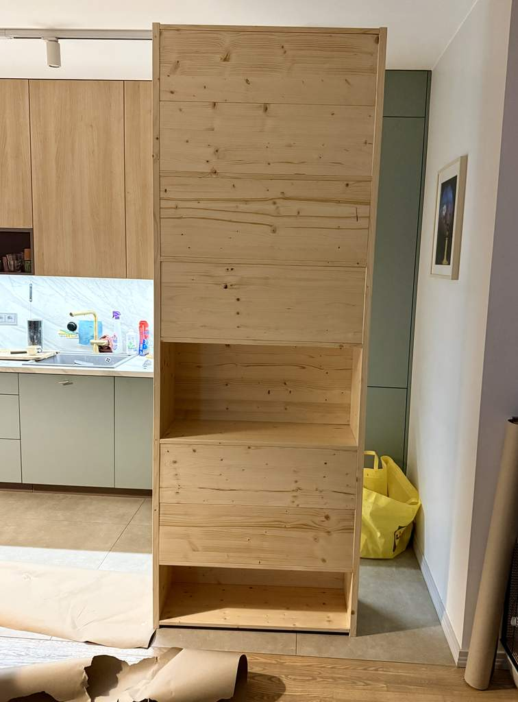
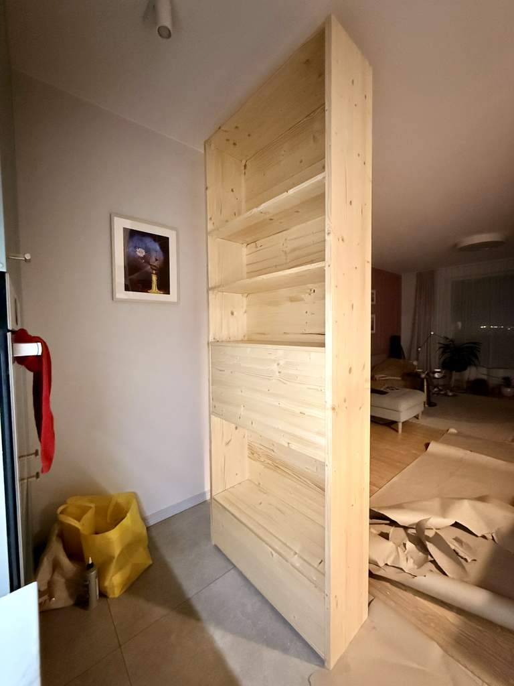
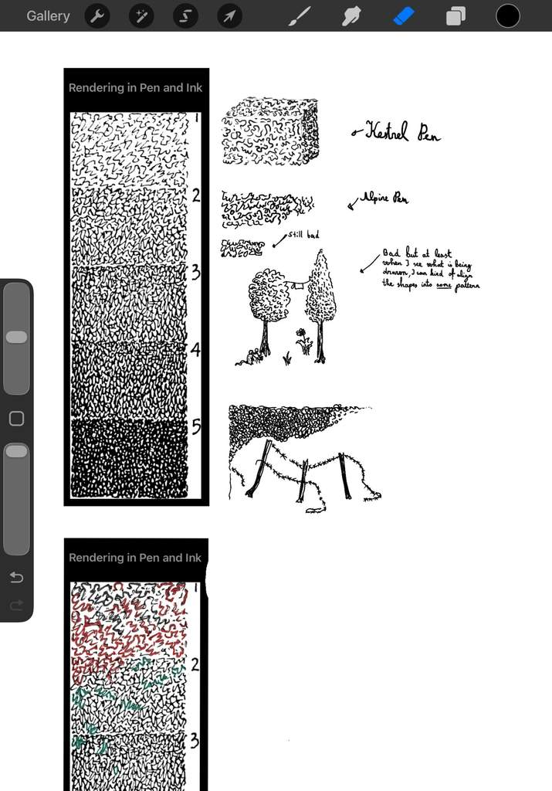

Learn pen shading with leafy shapes, varnishing large surfaces, some print CSS styles.
Today I sanded and varnished the new DIY shelve for my kids. Turns out water based varnish will raise the grain of the wood, and it'll look very bad, one must sand it. I learned that sanding is one thing, but you actually seem to "burn in / rub in" the previously varnished surface a bit even until it's smooth - as it even works with a completely worn sanding pad.


Currently it's not the best time to make photos, but I'm proud of finishing it so... Even if it's a bit ...basic. It'll look much better with all the details I'll add later on. I also learned that varnishing is not as simple as it looks. You have to be patient. Can't move the brush all around, as it leaves lines, and they better matched the grain...
One must also provide a good amount of varnish, otherwise it forms blobs, runs etc.
Best way is as usual - slow is fast, take your time. In the end I actually learned to kind of enjoy the tedious and boring process. What helped was thinking about doing the work the best I could.
I then spent a bit of time (as I promised to do this everyday) on my ink drawing book exercises. I encountered the first exercise where I'm having true trouble (can't draw it as it is shown) - and it's the random looking leafy pattern which is not random at all...
What I found helps is imaginging it's leafy shapes and then forgetting you're drawing the pattern - draw leafy shapes instead. It's not exactly the same, but maybe it not necessarily must be. Anyway, I'll return to this tomorrow. This will be very useful in my future illustrations.

I also worked on creating a new subreddit r/NaiveIllustration which will serve as a blog on my learning, kind of, with the idea of the drawings perhaps atracting an audience. Due to all this I was unable to actually finish any drawing and post it. Well, the shelf should take less time tomorrow, maybe then.
At work I also remembered a few printing CSS styles nuances. For example:
- it's indeed possible to detect "closing of print dialog":
window.print()
window.addEventListener('afterprint', handleAfterPrint) // niceI also, once again, confirmed that having 2 versions of a microservice you wrote with both being used in the codebase is not the way to go. I'll start remedying this tomorrow immediatelly.
I also learned this TIL section is truly a nice way to reflect on the day, even if I'll probably have to rename it to "Diary" :)
It being online forces one to try and write in an at least comprehensible manner, even if no one will probably read it. It kind of sums up the day and invigorates me to keep the work tomorrow.